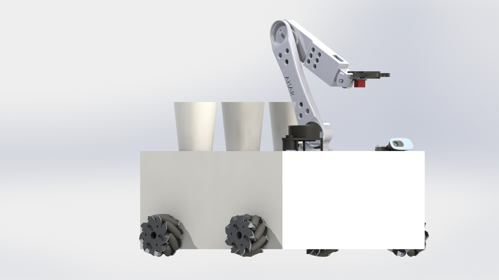
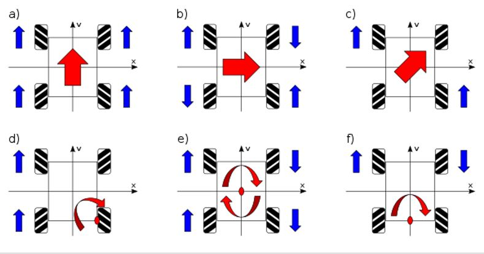
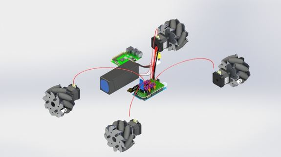

The assistant robot comprises of 4 mecanum wheels and a robotic arm.
The function performed by the robot is to pick a glass from a tray which is integrated with the body of the robot and serve it to the user.
The robotic arm is used to perform the above functionality.
The robot will perform this operation if and only if there is a user in front of it.
We have implemented a face detection algorithm in order for the robot to understand if there is a user in front of it or not. If a face is detected, the robot performs the serving operation.
Care has been taken to ensure that the design is ergonomically optimal.

The robot works with the help of 4 mecanum wheels. A mecanum wheel has rollers attached around its circumference. The rollers are placed 45 diagonally which is enables it to exert for in the diagonal direction when moving. These diagonal forces when applied in certain combinations helps the robot move in any direction.
Of the 4 wheels, two wheels are right-handed while two are left-handed. The orientation of these wheels is not random. It should be placed in such a way that the axis of rotation of all the wheels point towards the center of the body.
The following diagram shows the robot’s movement using mecanum wheels.

Usually, the rollers are made from rubber to provide better traction. The mecanum wheels can also be 3D printed due to its easy design and assembly.

We have established a serial communication between the Arduino code and the face detection code (i.e the Python code) by using the pyserial module. The idea is that whenever the face detection code detects a face, it will send a letter “H” (user defined value) to the serial port and the robot will execute the Arduino code for serving a glass to the human in front of it. If no face is detected then the face detection code will send a letter “L” (user defined value) to the serial port and thus informs the robot that there is no human to serve and hence no robot movement codes are executed. The logic presented has great scope for customization as per the requirements of the user and type of application.
The main base of the robot is supporting all the electronic components inside it as well as act as the body of the robot. It has to be designed in a way that it can support the weight of the robotic arm, LIDAR without failure while also being the main base for the 4 mecannum wheel.
The main base of the robot is made from medium density fiber (MDF). It is a 400mm x 400mm x 250 mm with a removable lid to help with the assembly and placement of components inside the thickness of this MDF box is 20mm.
Code for face detection (including the pyserial module for serial communication):-
import cv2
import serial
ser = serial.Serial('COM3', 9800, timeout=1)
face_cascade = cv2.CascadeClassifier('haarcascade_frontalface_default.xml')
videocapture = cv2.VideoCapture(0)
scale_factor = 1.3
while 1:
ret, pic = videocapture.read()
faces = face_cascade.detectMultiScale(pic, scale_factor, 5)
for (x,y,w,h) in faces:
cv2.rectangle(pic, (x,y), (x+w, y+h,), (255,0,0),2)
font = cv2.FONT_HERSHEY_SIMPLEX
cv2.putText(pic, 'Me', (x,y), font,2,(255,255,255), 2, cv2.LINE_AA)
print("Number of faces found {}".format(len(faces)))
if len(faces) == 0:
ser.write(b'L')
else:
ser.write(b'H')
cv2.imshow('face', pic)
k= cv2.waitKey(30) & 0xff
if k==2:
break
cv2.destroyAllWindows()
The Arduino Mega 2560 is a microcontroller board with adequate amount of sketch memory space and RAM. Which makes it very suitable in this project as it provides plenty of room for performing various functions. This device acts as a base unit to control all the other electronic components directly or indirectly via an embedded microprocessor unit.
Is a rechargeable battery of lithium ion technology using a polymer electrolyte instead of a liquid electrolyte. These batteries provide specific energy upto 4 times more than other lithium battery types and due to its very lightweight and flexible properties, they clearly are preferred in this project over other type of batteries as an energy source to power the system.
The nRF24L01H is a transceiver module capable of both sending and receiving data acting as a communicator between two or more microcontroller boards. Here it provides a connection between Arduino Mega 2560 and Raspberry Pi module 4 B. The module can work efficiently within the range of 100 meters hence can adapt semi autonomous features as wireless remote controlled projects.
HC-05 Bluetooth Module is responsible for establishing an interface between the microcontroller board and the customised alexa app used in this project. Its way of communication is serial communication which simplifies the interfacing with the controller.
The robot is supposed to move around the house autonomously. This function of the robot cannot be done without the help of a LiDAR sensor. For this project, the scan rate frequency is set to 5.5 Hz. The produced 2D point cloud data can be used in mapping, localization, and object/environment modelling. It has a distance range of 0.15m-6m. The computational power required by the LiDAR cannot be fulfilled by the Arduino. For this reason, a Raspberry Pi 4 Model B(4Gb) is used.
Raspberry Pi 4 is the latest model of the raspberry series of small formfactor computers. It is a powerful small computer which can perform complicated problems without any problems. One of the main reasons to use raspberry pi 4 was it cost efficiency when compared to traditional laptops and computers. With the recent advancements in chip technology, the raspberry pi can provide any computational requirement needed. Here the raspberry pi is used to provide the computational power required by the LiDAR. The raspberry pi which is powered by the Linux OS can run Python and MATLAB codes.
Simultaneous localization and mapping (SLAM) is a computational problem of building up and updating a map of an undiscovered surrounding. For a robot to be autonomous, the robot must be aware of its surroundings, hence localization is required. Localization of the robot is only possible when it has a map of the unknown environment. Due to this reason, SLAM is like a Chicken-Egg problem; the map is needed for localization, and a pose estimate is needed for mapping. SLAM algorithm helps in solving this problem by mapping an unknown environment and simultaneously localizing the vehicle with reference to the map. Engineers then use this map for path planning and obstacle avoidance of the robot as per their requirements.
SLAM has been a subject of research for a long time now. This algorithm has been a game-changer for the robotics community around the world due to its versatility. The solution to the SLAM problem would help in making the robot truly autonomous. A lot of research has been put to find the solution to the SLAM problem. With notable successes in the past decade, SLAM has been further developed and solved as an analytical problem in various forms. The domains capitalizing on the implementation and improvisation of this algorithm include but are not limited to, indoor activities, outdoor activities, underwater, and airborne systems.
For a home assistant robot, it is very important to know the map of the environment. With no maps of the surrounding, the robot will randomly move within the room and the very purpose of the robot will not be fulfilled. With SLAM, information such as the number of revolutions of the wheels and visual data from the cameras and other imaging sensors would be processed to create a map of the surrounding. This data would further be used for path planning and obstacle avoidance when the robot is assigned some task. For implementing SLAM, Robot Operating System (ROS) was used. ROS is a platform for writing robot software. It has many in-built tools, libraries, and conventions that can be used to simplify complex tasks and create a robust robot across various robotic platforms. For our project, we used prebuilt ROS packages such as Navigation Stack and G mapping to map the unknown surrounding using SLAM autonomously using RRT (Randomly Exploring Tree).